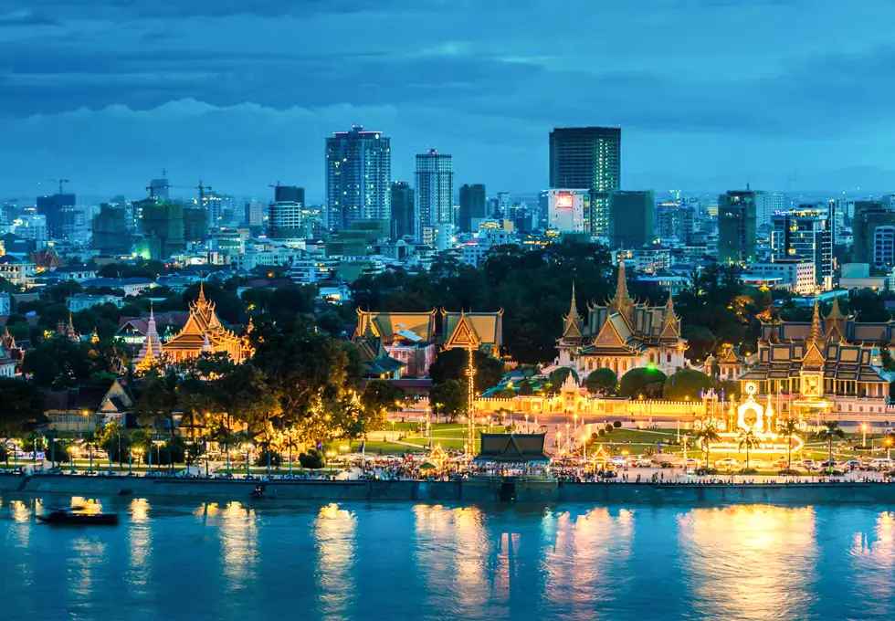

Phnom Penh (/pəˌnɒm ˈpɛn, ˌpnɒm -/;[6][7][8] Khmer: ភ្នំពេញ, Phnum Pénh [pʰnomˈpɨɲ], lit. 'Penh's Hill/Mountain') is the capital and most populous city of Cambodia. It has been the national capital since the French protectorate of Cambodia and has grown to become the nation's primate city and its economic, industrial, and cultural centre. Before Phnom Penh became capital city, Oudong was the capital of the country. Phnom Penh succeeded Angkor Thom as the capital of the Khmer nation but was abandoned several times before being reestablished in 1865 by King Norodom. The city formerly functioned as a processing center, with textiles, pharmaceuticals, machine manufacturing, and rice milling. Its chief assets, however, were cultural. Institutions of higher learning included the Royal University of Phnom Penh (established in 1960 as Royal Khmer University), with schools of engineering, fine arts, technology, and agricultural sciences, the latter at Chamkar Daung, a suburb. Also located in Phnom Penh were the Royal University of Agronomic Sciences and the Agricultural School of Prek Leap.[9] The city was nicknamed the "Pearl of Asia" for its early 20th century colonial French architecture, which included Art Deco works.[10] Phnom Penh, along with Siem Reap and Sihanoukville, are significant global and domestic tourist destinations for Cambodia. Founded in 1372, the city is noted for its historical architecture and attractions. It became the national capital in 1434 following the fall of Angkor, and remained so until 1497.[11] It regained its capital status during the French colonial era in 1865. There are a number of surviving colonial-era buildings scattered along the grand boulevards. On the banks of the Tonlé Sap, Mekong, and Bassac Rivers, Phnom Penh is home to more than 2 million people, approximately 14% of the Cambodian population.[4] The Greater Phnom Penh area includes the nearby Ta Khmau city and some districts of Kandal province.[12] The city has hosted numerous regional and international events, the most notable being the 2002, 2012, and 2022 ASEAN Summit, the 32nd Southeast Asian Games, and the 12th ASEAN Para Games. Phnom Penh will be the first Cambodian city and the second city in Southeast Asia to host the Asian Youth Games in 2029.[13] Phnom Penh (lit. "Penh's hill") takes its name from the present Wat Phnom (lit. "hill temple"), or from the ancient Funan Kingdom, which existed from the 1st to the 7th century AD in Southeast Asia and was the forerunner of the current Cambodian monarchy. Legend has it that in 1372, a wealthy widow named Penh found a Koki tree floating down the Tonlé Sap River after a storm.nside the tree were four bronze Buddha statues and a stone statue of Vishnu. Penh ordered villagers to raise the height of the hill northeast of her house and used the Koki wood to build a temple on the hill to house the four Buddha statues, and a shrine for the Vishnu image slightly lower down. The temple became known as Wat Phnom Daun Penh, which is now known as Wat Phnom, a small hill 27 metres (89 ft) in height. Phnom Penh's former official name is Krong Chaktomuk Serei Mongkol (Khmer: ក្រុងចតុមុខសិរីមង្គល, lit. "city of Brahma's faces"), in its short form as Krong Chaktomuk (lit. "city of four faces"). Krong Chaktomuk is an abbreviation of the full name, given to it by King Ponhea Yat: Krong Chaktomuk Mongkol Sakal Kampuchea Thipadei Serei Theakreak Bavar Intabat Borei Roat Reach Seima Moha Nokor (Khmer: ក្រុងចតុមុខមង្គលសកលកម្ពុជាធិបតី សិរីធរបវរ ឥន្ទបត្តបុរី រដ្ឋរាជសីមាមហានគរ [kɾoŋ catomuk mɔŋkɔl sakɑl kampuciətʰəpaɗəj serəj tʰeareaɓɑːʋɑː ʔenteapat ɓorəj rɔətʰariəcsəjmaː mɔhaːnɔkɔː]). This loosely translates as "the place of four rivers that gives the happiness and success of the Khmer Kingdom, the highest leader as well as impregnable city of the God Indra of the great kingdom".
